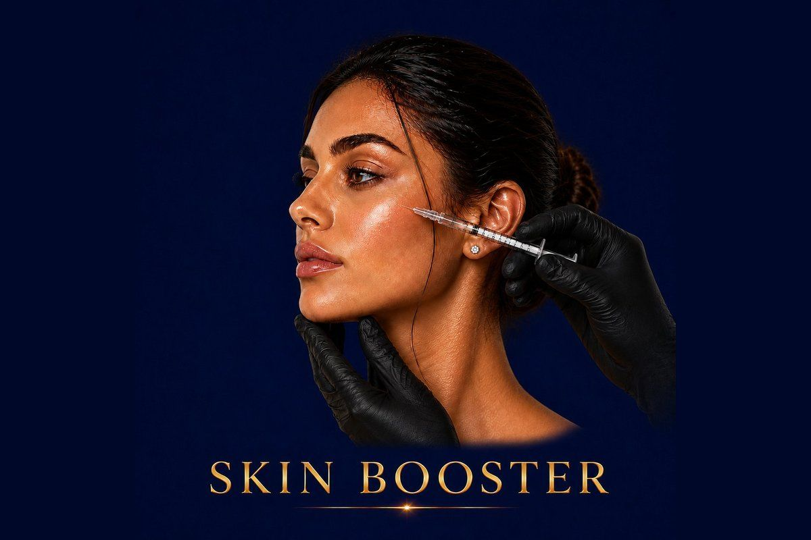

Skin Rejuvenation
Deep hydration, lasting glow, and improved skin quality — from within.
✓ Full medical content — verified for SEO and patient information.

About
Skin Boosters are micro-injections of pure or stabilized hyaluronic acid (and sometimes vitamins, peptides, and antioxidants) placed superficially into the skin. Unlike fillers, they don't reshape or add volume — they hydrate the skin from within, improve its elasticity, smoothness, and natural glow. Think of Skin Boosters as a deep, long-lasting hydration treatment delivered directly to where moisturizers and serums can't reach. They work at the level of the dermis, where they bind water, support collagen, and gradually transform skin quality over a series of sessions. At Hollywood Clinic Egypt, Skin Boosters are used for the face, neck, décolletage, hands, and even acne-scarred or sun-damaged skin — anywhere the skin needs to look healthier, brighter, and more luminous.
Why It Works
The Process
skin analysis, discussion of concerns, and selection of the appropriate Skin Booster product
cleansing of the area; topical numbing cream applied for 15–20 minutes
multiple micro-injections placed evenly across the treatment area using a very fine needle
30 minutes
may be combined with mesotherapy, micro-needling, or other treatments based on the plan
simple skincare guidelines for the next 24 hours
Most Skin Boosters require a series of 2–3 sessions spaced about 4 weeks apart to build results, followed by maintenance sessions every 4–9 months
Some products (like Profhilo) work with as few as 2 sessions
Who It's For
Safety First
Quality You Can Trust
Treatment Comparisons
Botox treats muscles (expression lines). Skin Boosters treat skin quality (hydration, glow, elasticity). They don't compete — they're often combined.
Filler reshapes and adds volume. Skin Boosters don't change your shape — they improve the skin itself. A filler patient with dull skin still has dull skin; a Skin Booster patient has glowing skin without any change to features.
Skin Boosters mainly hydrate and improve quality with HA. Biostimulators trigger collagen production for structural rejuvenation. Skin Boosters work faster but Biostimulators last longer and address deeper changes.
Mesotherapy is a category of injections that includes Skin Boosters. Some Skin Boosters (like NCTF) are technically advanced mesotherapy cocktails. The difference is in formulation, regulation, and clinical evidence — premium branded Skin Boosters have more research behind them.
Topical skincare works on the skin's surface. Skin Boosters are placed in the dermis, where serums and creams can't reach. They work alongside skincare, not in place of it.
Investment
Skin Boosters
Skin Booster pricing at Hollywood Clinic depends on several factors and is set after a free consultation: Brand and product type (Profhilo, Restylane Vital, NCTF, Volite have different costs).
Final pricing is determined after a free consultation, because every case is different.
Book Free ConsultationWhy Hollywood Clinic
Dr. Marwa Magdy — Consultant in Dermatology & Aesthetic Medicine. Signature expertise in Skin Boosters as part of combination treatment plans for face, neck, and hands
Dr. Rana Safwat — Dermatology, Laser & Aesthetic Specialist. Wide experience in Skin Boosters integrated with mesotherapy and laser protocols
Dr. Nesma Samir — Laser Aesthetic Dermatology Specialist. Skin Boosters as part of her signature anti-aging and photoaging treatment protocols
FAQ